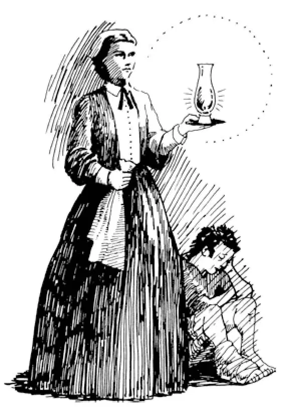
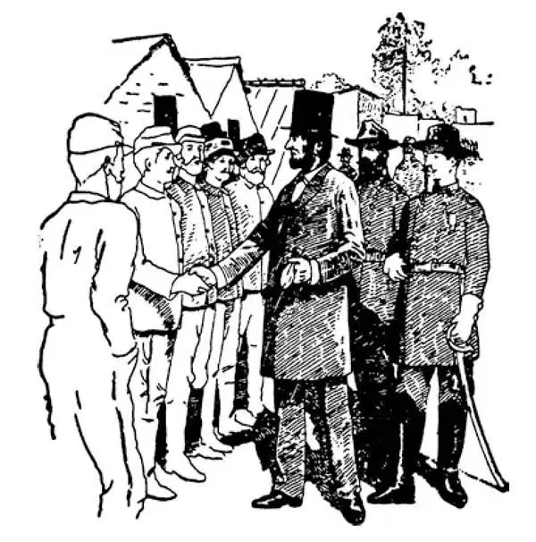

80
The Daily Papers of 1854-1865
1854-1865年的日报

IF you could go up into your grandmother's attic or the attic of somebody else's grandmother, or could dig down into some old trunk, you might find some of the newspapers that were printed during the years from 1854 to 1865. You might actually read in these daily papers the happenings that I am now going to tell you about. Under the heading, Foreign News , you would probably find some of the following things told about:
ENGLISH NEWS . At this time the queen of England was named Victoria. She was much beloved by her people because she had such a kindly nature. You may have seen a picture of her surrounded by her many children. Victoria had five daughters and four sons. So you can see that she was a mother as well as a queen. She was more like a mother to her people than a queen. She ruled for more than half a century, and the time when she ruled is called the Victorian Age.
The English news of 1854 would tell about a war that the English were then fighting with Russia. Russia was a long way off, and so the English had to send their soldiers in boats through the Mediterranean Sea to the end, then past Constantinople into the Black Sea. There, in a little spot of land that jutted out from Russia into the Black Sea, most of the fighting was done. This little spot of land was called the Crimea, and the war therefore was called the Crimean War. In this war in that far-off land, thousands of English soldiers died from wounds and disease.
Now, there was living in England at the time of this war a lady named Florence Nightingale. She was very tender-hearted and always looking out for and taking care of those who were sick. Even as a little girl, she had played that her dolls were sick with a headache or a broken leg, and she would bandage the aching head or broken leg and pretend to take care of her sick patient. When her dog was ill, she nursed him as carefully as if he were a human being.
Florence Nightingale heard that English soldiers were dying by the thousands in that distant land far away from home and that there were no nurses to take care of the wounded. She got together a number of women, and they went out to the Crimea. Before she arrived, almost half the soldiers who were wounded died—fifty soldiers out of a hundred; after she and her nurses came, only two in a hundred died. She went about through the camps and over the battlefields at night carrying a lamp, looking for the wounded. The soldiers called her the Lady of the Lamp, and they all loved her.
When at last the war was over and she returned to England, the government voted to give her a large sum of money for what she had done. She, however, refused the money for herself but took it to found a home for training nurses. Nowadays professional nurses are thought almost as necessary as doctors, and anyone who is sick can call in a trained nurse to take care of him, but at that time there were no professional nurses. Florence Nightingale was the first to start teaching nursing, and she is looked upon almost as a saint today.

Florence Nightingale searching out the wounded
弗洛伦斯•南丁格尔在寻找伤员
In one battle in the Crimea, a company of soldiers mounted on horseback were given by mistake an order to attack the enemy. Though they knew it meant certain death, they never hesitated but charged, and two-thirds of them were killed or wounded in less than half an hour. Lord Tennyson, the English poet, has told this story in verse which you may know. It is called The Charge of the Light Brigade .
JAPANESE NEWS . Japan is a group of islands near China. Although I have not told you about it before, it was an old country, settled in its ways even before Rome was founded. In Europe there have been constant changes of kings and rulers and people and countries. But in Japan they have had the same line of kings since before Christ.
Japan was very lucky in one way. In all the years, the Japanese islands were never occupied by a foreign army. But in 1853, the year before England began the Crimean War, an American naval officer named Commodore Perry sailed into Tokyo Bay, an important Japanese harbor, with American warships. The Japanese emperor then allowed Americans to come in and do business in Japan.
These are some of the things you might read about in those old newspapers. Such news would probably have taken up little space. Perhaps they would have been found down at the bottom of a column if the newspaper were American. But if the paper were printed between 1861 and 1864, the greater part of it would be about a war that was going on in our country at that time. This was a war between our own people, a family quarrel, which we call the Civil War, or the War between the States.

Lincoln visiting camp and shaking hands with the soldiers
林肯视察兵营，与士兵们握手
Two parts of our country, the North and the South, did not agree on several matters, chief of which was the question whether southerners could own slaves. So they went to war with each other. Thousands upon thousands of Americans died in this war. The war lasted for four years, from 1861 to 1865, before it was decided that no one could ever again own slaves in the United States.
Some of you who read these pages may be descended from men who fought in this Civil War. Some of these fought for the South; some fought for the North. Black men and white men and even some women fought. You should ask your parents or grandparents if any of your ancestors fought in the Civil War.
The president of the United States at that time was a man named Abraham Lincoln. Lincoln was a very poor boy who had been born in a log cabin. He had taught himself to read by the light of a blazing knot of wood at night after his day's work on his father's farm was done. As he was very poor, he had only a few books, and these he read over and over again. One of these books was the same Aesop's Fables that you read. When Lincoln was a young man, he became a store-keeper. One day he found that he had given a poor woman a smaller package of tea than she had paid for, and he closed the store and walked many miles to her house in order to return the change. People began to call him Honest Abe after that, for he was always very honest and kind-hearted.
He studied hard and became a lawyer and at last was elected president of the United States. While he was president, he declared that slavery should be abolished. One evening, Lincoln was watching a play from a private box at Fords Theater. Suddenly, John Wilkes Booth, who thought Lincoln had not done right in freeing the slaves, broke into the president's box and shot Lincoln, who died the next day.
Lincoln was one of our greatest presidents. Washington started our country; Lincoln prevented its splitting into two parts and kept it together as one big united land to grow into the great country it now is.
【中文阅读】
如果你可以爬到你祖母或者别人祖母的阁楼上，或者可以在某个旧箱子里仔细搜寻一番，你也许会找到一些1854至1865年间印刷的报纸。下面我要介绍的这些事情，你也许真的会在这些日报上读到。在“外国新闻”这一标题下，你有可能会找到下面讲述的一些事情：
英国新闻。这时期英国女王名叫维多利亚。因为天性仁慈，她深受国民爱戴。你也许见过一张图片，图片上的她被她的许多孩子围绕着。维多利亚有五个女儿和四个儿子。所以你能够看到她既是女王，也是一位母亲。对她的国民来说，她更像一位母亲，而不是女王。她在位长达半个多世纪，这段时期被称为“维多利亚时代”。
1854年的英国新闻会讲述到英国和俄国的一场战争。俄国十分遥远，所以英国人必须用船把士兵运到地中海，再经过君士坦丁堡进入黑海。俄国有一小块土地突出到黑海里，英俄战争大多数发生在那里。这一小块土地叫做克里米亚半岛，因此这场战争就叫做“克里米亚战争”。在这场战争中，成千上万的英国士兵因为伤重和疾病死在那片遥远的土地上。
战争期间在英国有一位名叫弗洛伦斯•南丁格尔的女士。她常怀恻隐之心，总是关怀照料那些生病的人。甚至在小时候，她就自娱自乐假装她的玩具娃娃生病头疼或者断了一条腿，她给娃娃包扎头和腿，然后把它想象成病人来照顾它。她的狗生病时，她像照顾人一样细心地照顾它。
弗洛伦斯•南丁格尔听说大批大批的英国士兵死在远离家乡的土地上，还听说那里没有护士照顾伤员。她组织了一些女人，一起前往克里米亚。在她到来之前，几乎有一半的受伤士兵都死掉了——一百个伤兵中有五十个死去了；她和护士们来了以后，一百个伤兵中只有两个死去。夜里她在营地四处巡视，还提着一盏灯在战场上寻找伤员。士兵们称她为“提灯女士”，所有的人都敬爱她。
最终战争结束了，她回到了英国，政府通过表决为她的贡献奖给她一大笔钱。但是她不愿让这笔钱归她个人所有，而是用这笔钱创办了一个培训护士的基地。如今专业护士被认为几乎和医生一样必不可少，任何人生了病都可以请受过专门训练的护士来照顾自己，但是那时候没有专业的护理人员。弗洛伦斯•南丁格尔是第一个开始教授护理的人，现在她几乎被尊为圣人。
在克里米亚的一场战役中，一批骑上马的士兵，收到错误的命令去进攻敌人。尽管他们知道这一去必死无疑，但是他们却毫不犹豫地向前冲，半小时不到的时间里就有三分之二的士兵被杀死或受了伤。英国诗人丁尼生勋爵用诗歌讲述了这个故事，你也许知道这首诗。诗的题目是《轻骑兵冲锋》。
日本新闻。日本是靠近中国的一群岛屿。虽然在这之前我没有介绍过日本，但是它是一个古老的国家，甚至在罗马建立之前，这个国家就按自己的生活方式延续 下来。在欧洲，国王和统治者、人民和国家也不断变更替换。但是在日本，自从公元前开始他们的历代国王都来自同一个家族。
日本在一个方面非常幸运。这么多年以来日本岛屿从未被外国军队占领过。但是在1853年，也就是英国开始克里米亚战争的前一年，一个名叫佩里的美国海军准将乘美国军舰驶入日本的一个重要海港东京湾。于是日本天皇同意美国人进入日本并在日本经商。
这些事情你也许在那些旧报纸上可以读到。这样的新闻很可能不占用什么篇幅。如果是美国报纸的话，可能只在专栏底部可以找到这样的新闻。但是如果报纸是 1861至1864年间印刷的，报纸大部分新闻会是关于当时在美国进行的一场战争。这是一场美国内部的战争，一次家庭争执，我们称之为“美国内战”，或“南北战争”。
美国两部分，北方和南方，在几件大事上意见不一致，其中最重要的是南方人是否可以拥有奴隶这一问题。于是他们兵戎相见，互相打起来。成千上万的美国人在这场战争中死去。从1861年到1865年，战争持续了四年，战争结束后，终于确定任何人都不能在美国拥有奴隶。
阅读这几页的人中可能就有参加过这场内战的人的后代。其中有些人为南方作战，有些人为北方作战。黑人、白人甚至一些女人都加入了战争。你应该问问你父母或祖父母，在你的先辈中是否有人参加过美国内战。
当时的美国总统是一个名叫亚伯拉罕•林肯的人。林肯出生在一间小木屋里，从小家庭贫困。林肯白天在父亲的农场里干活，到了夜晚他就借着燃烧的木瘤块发出的火光自学读书。因为贫穷，他只有很少几本书，这些书他翻来覆去，不知读了多少遍。其中一本书你也读过，就是《伊索寓言》。林肯年轻时当过店员。一天一个穷女人在店里买了一小包茶叶，她走后，林肯发现她多给了钱，于是他关上店门，走了很远的路到她家去退还多余的零钱。从那以后人们开始叫他为“诚实的艾贝”，因为他总是非常诚实善良。
他刻苦学习，成了一名律师，最后当选为美国总统。在担任总统期间，他宣布废除奴隶制。一天晚上，林肯正在福特剧院的一间私人包厢里观看演出。约翰•威尔克斯•布思这个人认为林肯解放奴隶是不对的，他突然闯入总统包厢，枪杀了林肯，林肯第二天就去世了。
林肯是美国最伟大的总统之一。华盛顿建立了美国，林肯防止了美国分裂为两部分。将其作为一个统一的大国团结在一起，并为美国发展成现在这样伟大的国家奠定了基础。